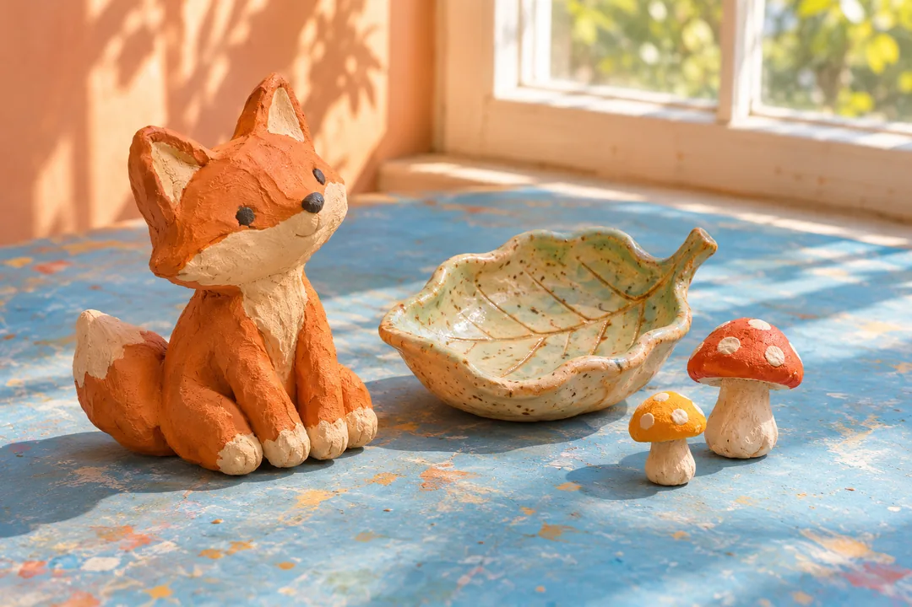

Подбор по возрасту
Подборки для 4–6, 7–8 и 9–12 лет отличаются по сложности.
Симулятор VK
Выберите возраст ребёнка и интересы. Бот предложит пример занятия по лепке или рисованию и покажет путь до демозаписи.

VK · Демо-чат
Независимый дизайн-концепт. Заявки и личные данные не отправляются.
Подборки для 4–6, 7–8 и 9–12 лет отличаются по сложности.
Сравните лепку, рисование и керамическую флористику.
Получите подсказки для первого визита и проверьте сводку выбранного занятия.